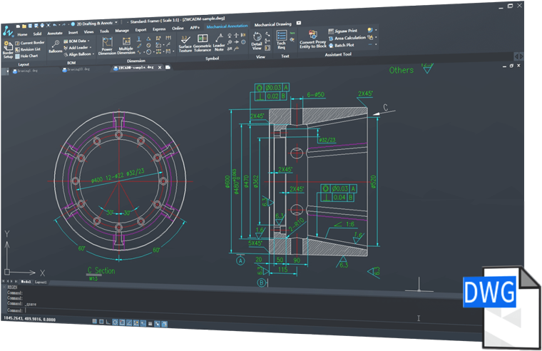

Redacción Mecánica 2D Profesional
ZWCAD Mechanical para fabricación proporciona abundantes herramientas como generador de ejes, dimensión de tolerancia, símbolo de textura de superficie, globo y lista de materiales y piezas estándares para el dibujo mecánico en 2D.
Fácil de usar y alta compatibilidad con DWG
Basado en su familiar ZWCAD, alta compatibilidad con DWG
Anotación Inteligente
Dimensión Poderosa
Dimensión Poderosa facilita el dimensionamiento con cuadros de diálogo abreviados que controlan y expanden solo las variables que son relevantes para la fabricación, así como integran la tolerancia y la información de la lista de ajuste.
Múltiples Dimensiones
Con Múltiples Dimensiones, usted puede crear múltiples dimensiones con una entrada mínima y ordenada espacial apropiada, elementos paralelos o simétricos.
Detectar la superposición de dimensiones y determinar la distancia adecuada
Las dimensiones superpuestas se pueden espaciar automáticamente de manera apropiada. Se determina la distancia adecuada desde el objeto que se está dimensionando, haciendo que las dimensiones lineales se vean ordenadas y claras.
Diseño Rápido con Símbolos Mecánicos
Los símbolos mecánicos, que incluyen símbolos de textura de superficie, identificadores de referencia y objetivos, conicidad, orificio central y símbolosde soldadura, ahorran mucho tiempo y mejoran la precisión del diseño.
Globo Inteligente y BOM
Generar Globos y BOM Fácilmente
Con ZWCAD Mechanical, usted puede dibujar, alinear y renumerar globos basados en estándares fácilmente. Solo se necesita un paso para crear una lista de materiales. Además, reconoce automáticamente las partes estándares y las resume en BOM.
Globo Asociativo y BOM
Cada cambio en el globo se actualizaría a la lista de materiales, asegurándose de que los datos sean siempre correctos y estén actualizados.
Entorno de Dibujo Inteligente
Soporte de estándares empresariales e internacionales
ZWCAD Mechanical admite entornos de dibujo ISO, ANSI, DIN, JIS y GB, y también proporciona una manera fácil de personalizar los estándares de la empresa.
Gestión y mapeado de capas
Cada entidad mecánica, como borde, dimensión, símbolo, etc., se colocaría en la capa predeterminada con color y tipo de línea predeterminados. Con el mapeado de capas, la entidad mecánica se puede colocar en una capa personalizada para que coincida con las prácticas de la empresa.
Múltiples fronteras y escalado adaptativo
ZWCAD Mechanical admite el dibujo de múltiples bordes con diferentes escalas, y el tamaño de los objetos de las anotaciones se puede cambiar de acuerdo con la escala del borde.

Super Edit
La reeditación es fácil, haga doble clic en los objetos y luego la configuración en el cuadro de diálogo cambiará automáticamente.
Partes Mecánicas y Generador
Biblioteca de Piezas
La biblioteca de piezas ZWCAD contiene tornillos, tuercas, arandelas, pasadores, remaches, resortes, cojinetes, etc. Le ahorra horas de trabajo al tomar piezas directamente de la biblioteca.
Ejes y Engranajes
Puede crear ejes y engranajes al ingresar los parámetros geométricos, lo que acelera en gran medida todo el proceso de diseño.
Herramientas de Dibujo Extendidas para Fabricación
Líneas de Construcción
El programa incluye un total de 32 opciones para crear líneas de construcción y 7 opciones para crear círculos de construcción. Las líneas de construcción se pueden usar como referencia para crear otros objetosy facilitar el dibujo.
Línea Central Avanzada
Usted puede agregar una línea central a un círculo o rectángulo simplemente seleccionando objetos. Las líneas centrales se pueden dibujar como una sola entidad o entidades múltiples.
Herramientas de Detalles Reutilizables
Genere la vista de detalle con unos pocos clics,y se puede actualizar cuando se realiza un cambio en la geometría.
Dibujar Muescas de Forma Rápida y Precisa
La muesca técnica es un segmento esencial en el proceso de diseño mecánico, ZWCAD Mechanical ofrece una variedad de características de construcción de la estructura del proceso, que incluyen surcos de grietas, relieves de ejes y rectificadores de orificios.